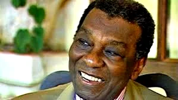
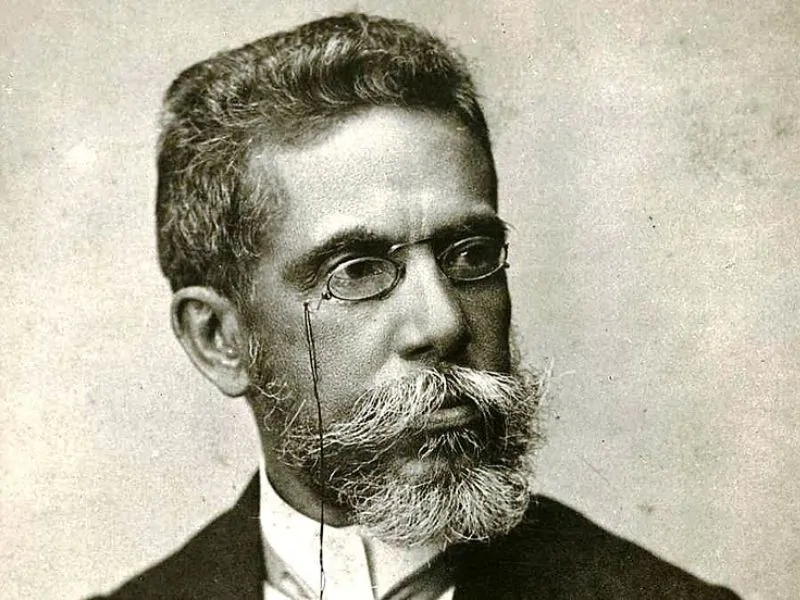

Cantor, músico, instrumentista e ministro da cultura, Gilberto Gil foi importante de muitas formas para o Brasil. A música entrou desde cedo na vida do artista - já com nove anos, Gil começou a estudar música na Academia Regina. Em 1963 conheceu outros jovens talentosos: Caetano Veloso, Maria Bethânia, Tom Zé e Gal Costa. Juntos com outros artistas criaram o Movimento Tropicalista. Gilberto Gil participou dos históricos Festivais da Canção e foi um contestador dentro da sua geração. Com a ditadura, em 1969, foi obrigado a se exilar e só retornou ao Brasil em 1972. Na política, Gil trabalhou como vereador na Câmara Municipal de Salvador (1989-1992) e em 2003 foi nomeado para Ministro da Cultura (2003-2008). .
Nascida em Salvador, descendente direta de escravizados libertos, Mãe Menininha assumiu o Terreiro do Gantois aos 28 anos. Os seus antepassados fundaram o primeiro terreno Nagô do Brasil, em 1849. Maria Júlia da Conceição Nazareth foi a primeira mãe-de-santo que ganhou fama no nosso país e era a avó de Mãe Menininha. Mãe Menininha foi fundamental na luta pela aceitação e divulgação do candomblé no Brasil e convidou brancos e católicos para conhecerem o terreiro. A religiosa ajudou na queda da Lei de Jogos e Costumes (de 1930), que proibia rituais depois das 22 horas.
Uma das personalidades mais importante da nossa história é o líder da resistência negra Zumbi dos Palmares, que nasceu no Quilombo dos Palmares (região de Alagoas). No Quilombo, que foi um verdadeiro centro de luta contra a escravidão, chegaram a viver cerca de trinta mil pessoas, homens e mulheres escravizadas que escaparam dos seus senhores e outras pessoas marginalizadas na sociedade colonial. Durante aproximadamente dezoito anos, Zumbi defendeu o Quilombo contra capitães do mato e governantes que queriam destruir a comunidade. A morte de Zumbi foi trágica: denunciado por um dos companheiros, foi capturado, morto e degolado. Sua cabeça ficou exposta em praça pública para desencorajar outros escravizados e escravizadas de se rebelarem. O Dia da Consciência Negra (22 de novembro) - dia do assassinato brutal de Zumbi - é uma importante data que relembra e fortalece a luta e a força do povo negro no Brasil.
MILTON SANTOS O maior geógrafo do Brasil ficou conhecido internacionalmente e chegou a dar aulas em uma série de universidades estrangeiras. Milton Santos nasceu na Bahia e, como era filho de professores, começou a dar aulas desde cedo, ainda com 13 anos. Depois de se formar em direito, fez doutorado na área que sempre despertou a sua paixão: a geografia. Durante a ditadura militar foi perseguido no Brasil e se exilou na França. Reconhecido pelo seu trabalho, Milton Santos recebeu o título de doutor honoris causa por mais de 20 instituições no Brasil e no exterior. Ele foi também o único brasileiro a receber o prêmio Vautrin Lud (o Nobel da Geografia), em 1994.
MACHADO DE ASSIS Joaquim Maria Machado de Assis foi outro brasileiro que superou o racismo e se tornou um dos maiores nomes da literatura nacional, sendo, inclusive, fundador da Academia Brasileira de Letras. Machado de Assis mal frequentou escolas e, superando as dificuldades, conseguiu ascender socialmente. Vivendo no contexto de difusão do ceticismo e das teorias sociais de que os negros seriam atrasados e inferiores aos brancos, ele conseguiu comprovar que a capacidade não está na cor, mas no intelecto. Além disso, através de sua atuação na administração pública, lutou contra a escravidão, buscando alargar a Lei do Ventre Livre, de 1871, para que ela, de fato, conseguisse beneficiar os escravos.